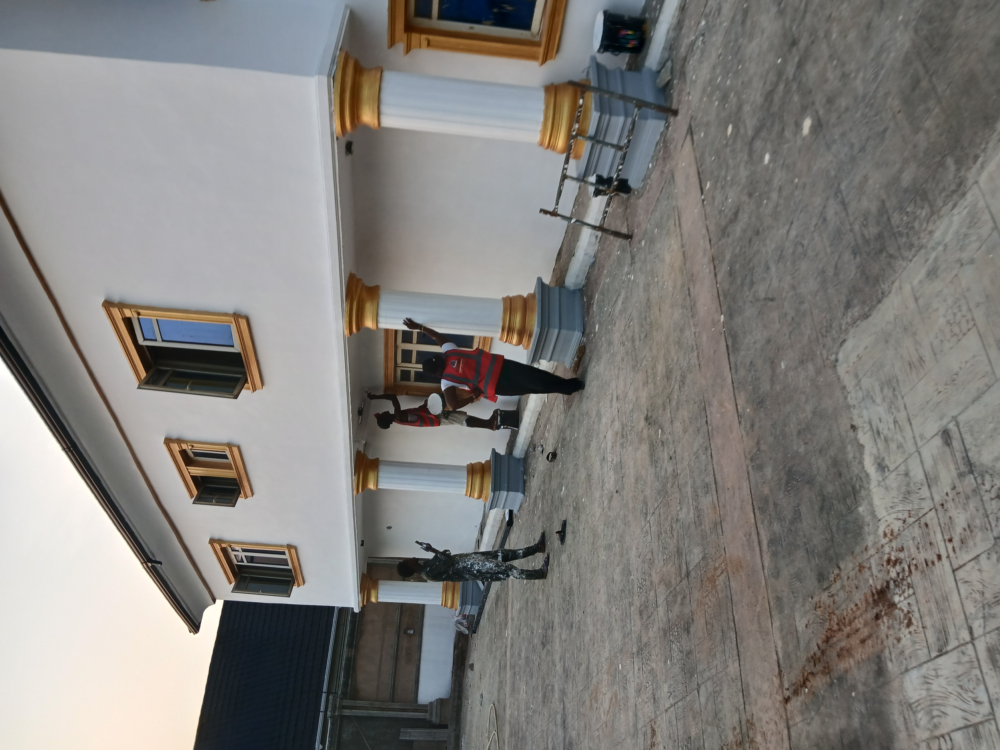
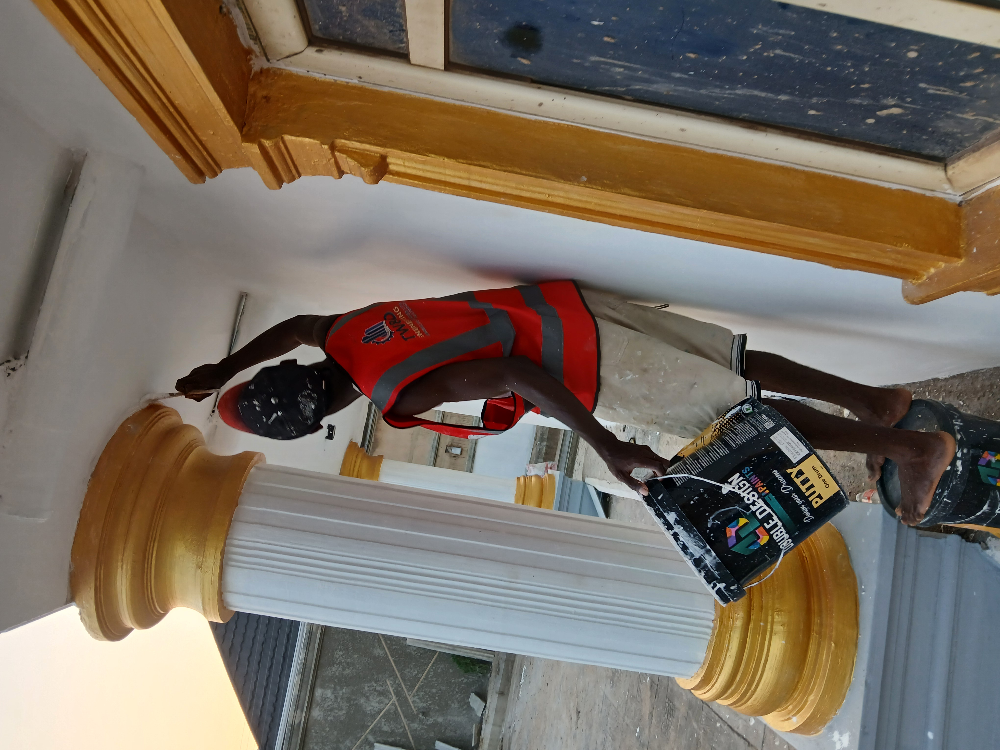
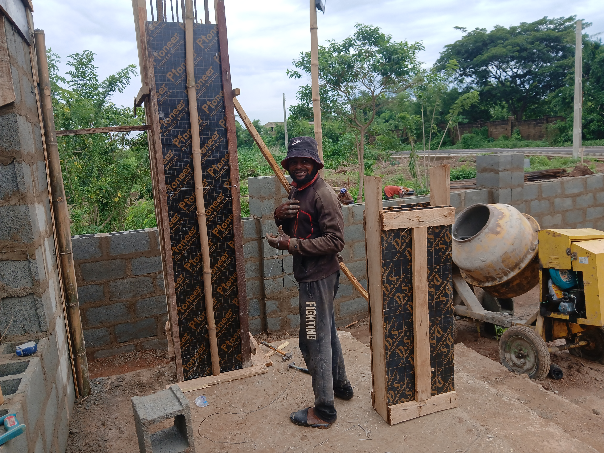
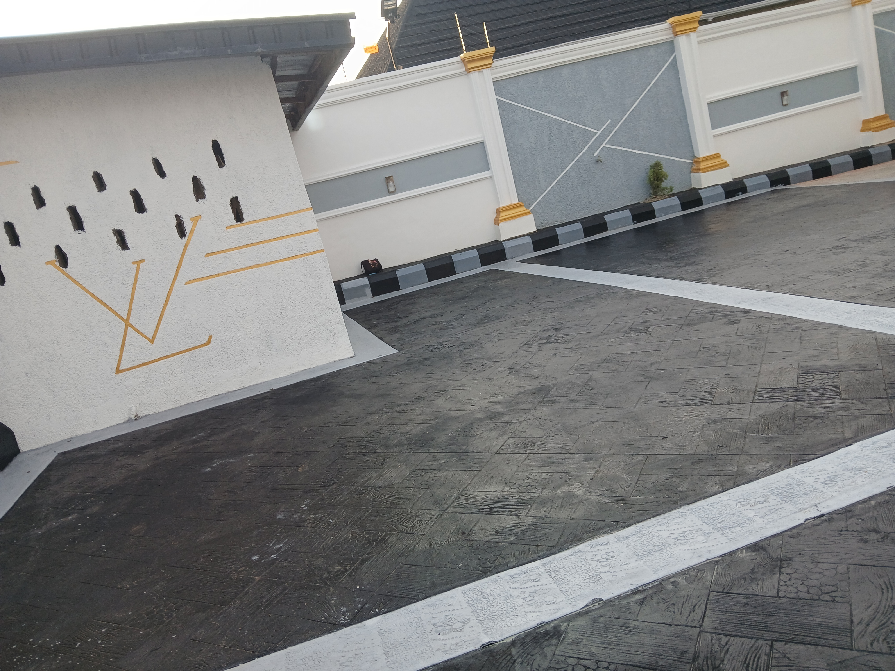
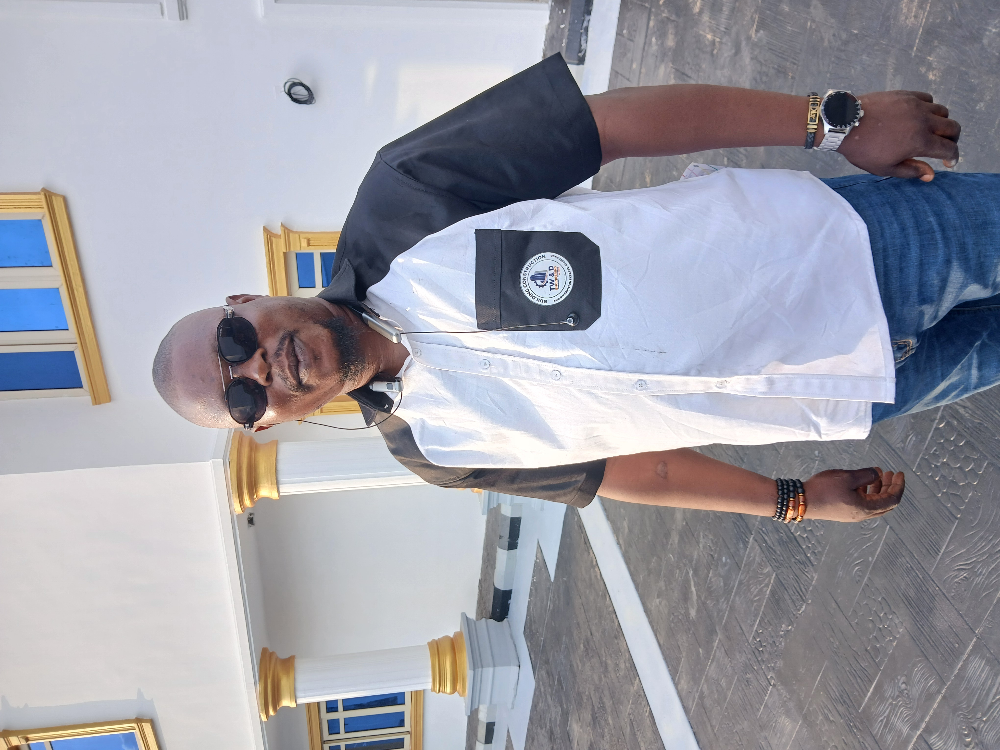
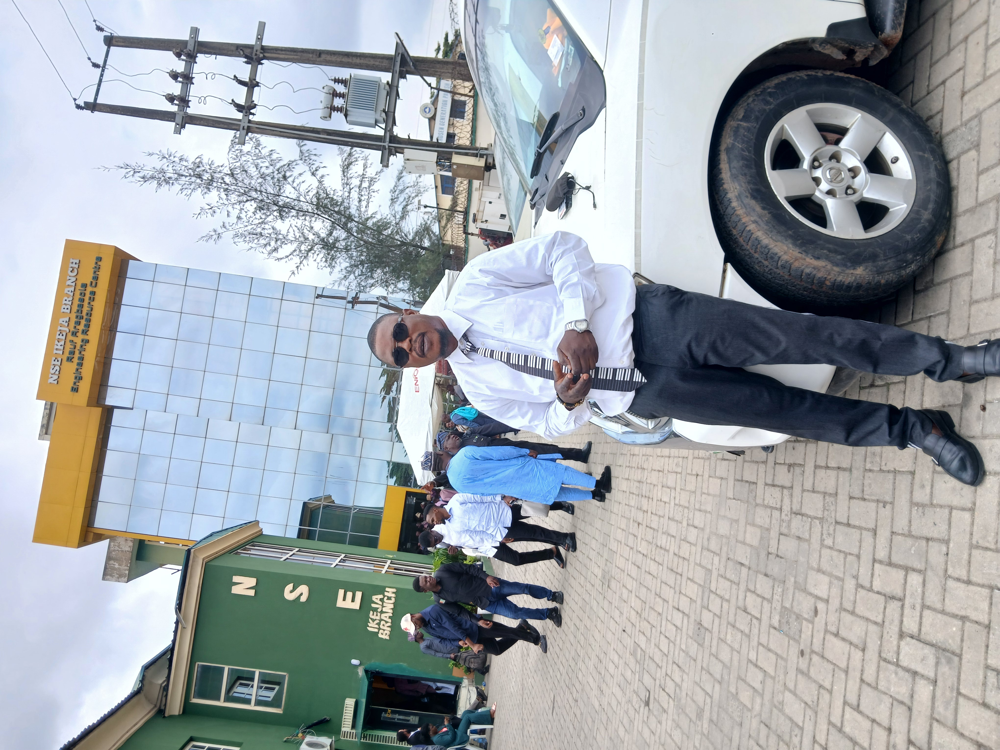
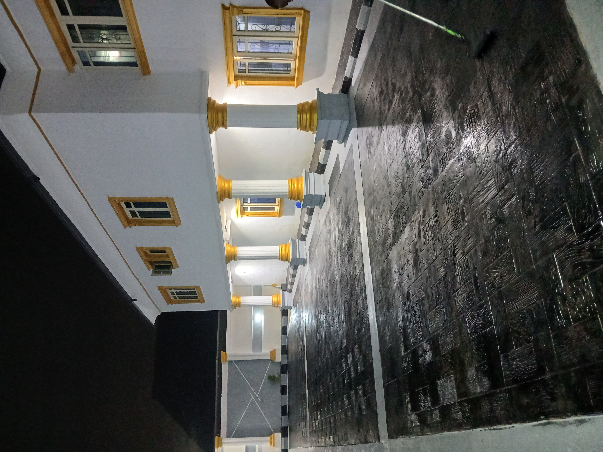

OYO STATE
Royal Garden Estate
Residential / estate development project record.
View project record →PROJECT PORTFOLIO
Explore the project records below. Open a project for its documented overview, then use the project page to discuss a similar project with TW&D.
OYO STATE
Residential / estate development project record.
View project record →OYO STATE
Residential building project record.
View project record →LAGOS STATE
Institutional building project record.
View project record →OYO STATE
Residential / development project record.
View project record →OYO STATE
Building development project record.
View project record →OYO STATE
Estate development project record.
View project record →OYO STATE
Hospitality / building project record.
View project record →OYO STATE
Residential client project record.
View project record →VISUAL GALLERY & INSPIRATION
A selection of visual material for browsing and inspiration. These images are not assigned to the historical project records above and should not be interpreted as photographs of those specific projects.








When verified photographs are supplied for a particular project, they can be added to that project's record separately.